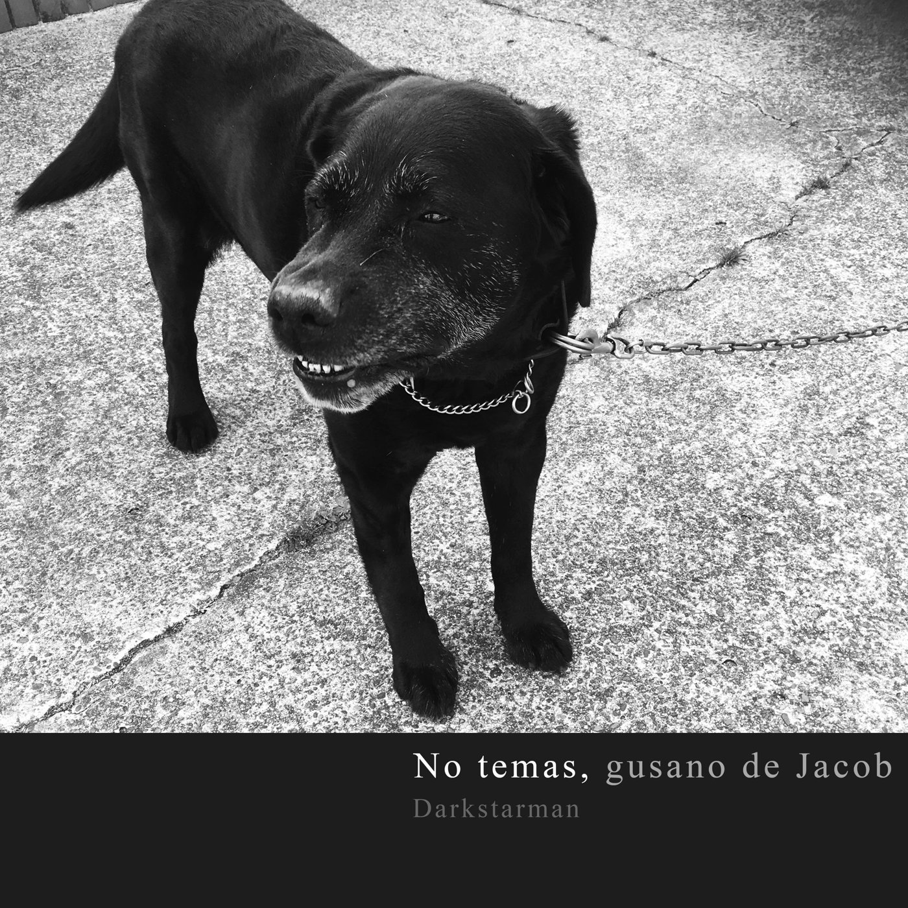

chronoseiun production
Graveyard of the Black Nebula
all
artwork
darkstarman

No temas, gusano de Jacob
darkstarman
· 2018
1
daily5.2
2:07
2
nightfallsonme
7:42
3
becameanight
4:14
4
daily10
1:32
5
cosmostick
5:13
6
finegradeH
5:19
7
suntouchalpha
9:06
8
daily2.4.3
5:06
Bandcamp
YouTube
Discogs